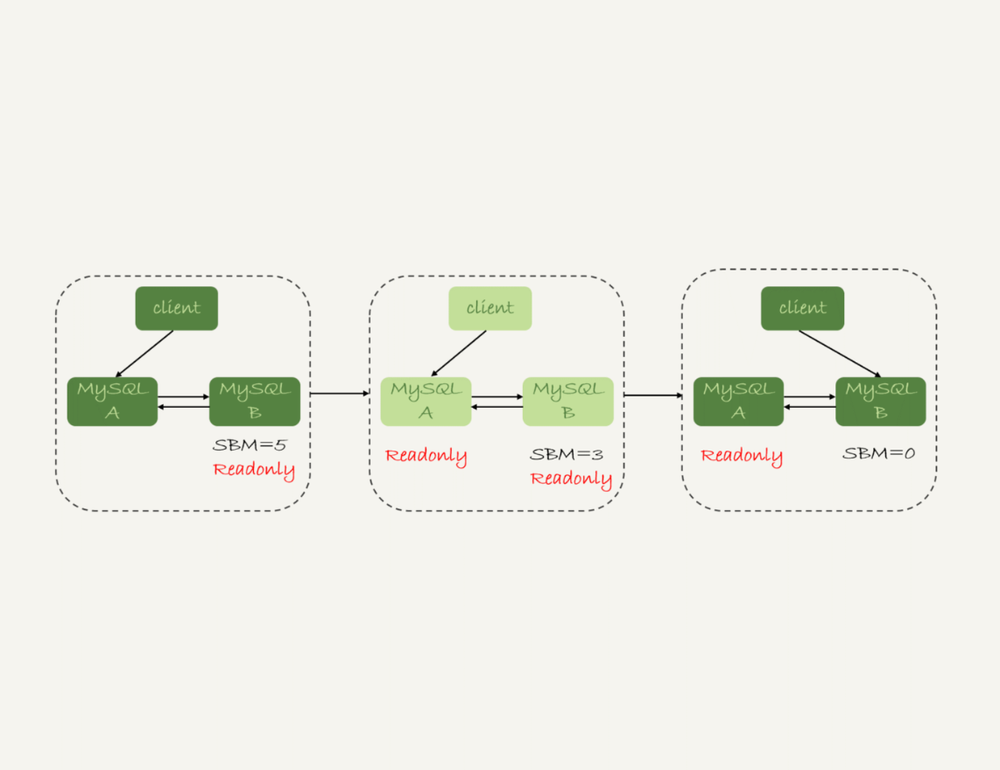

- 00 开篇词 这一次，让我们一起来搞懂MySQL.md.html
- 01 基础架构：一条SQL查询语句是如何执行的？.md.html
- 02 日志系统：一条SQL更新语句是如何执行的？.md.html
- 03 事务隔离：为什么你改了我还看不见？.md.html
- 04 深入浅出索引（上）.md.html
- 05 深入浅出索引（下）.md.html
- 06 全局锁和表锁 ：给表加个字段怎么有这么多阻碍？.md.html
- 07 行锁功过：怎么减少行锁对性能的影响？.md.html
- 08 事务到底是隔离的还是不隔离的？.md.html
- 09 普通索引和唯一索引，应该怎么选择？.md.html
- 10 MySQL为什么有时候会选错索引？.md.html
- 11 怎么给字符串字段加索引？.md.html
- 12 为什么我的MySQL会“抖”一下？.md.html
- 13 为什么表数据删掉一半，表文件大小不变？.md.html
- 14 count()这么慢，我该怎么办？.md.html
- 15 答疑文章（一）：日志和索引相关问题.md.html
- 16 “order by”是怎么工作的？.md.html
- 17 如何正确地显示随机消息？.md.html
- 18 为什么这些SQL语句逻辑相同，性能却差异巨大？.md.html
- 19 为什么我只查一行的语句，也执行这么慢？.md.html
- 20 幻读是什么，幻读有什么问题？.md.html
- 21 为什么我只改一行的语句，锁这么多？.md.html
- 22 MySQL有哪些“饮鸩止渴”提高性能的方法？.md.html
- 23 MySQL是怎么保证数据不丢的？.md.html
- 24 MySQL是怎么保证主备一致的？.md.html
- 25 MySQL是怎么保证高可用的？.md.html
- 26 备库为什么会延迟好几个小时？.md.html
- 27 主库出问题了，从库怎么办？.md.html
- 28 读写分离有哪些坑？.md.html
- 29 如何判断一个数据库是不是出问题了？.md.html
- 30 答疑文章（二）：用动态的观点看加锁.md.html
- 31 误删数据后除了跑路，还能怎么办？.md.html
- 32 为什么还有kill不掉的语句？.md.html
- 33 我查这么多数据，会不会把数据库内存打爆？.md.html
- 34 到底可不可以使用join？.md.html
- 35 join语句怎么优化？.md.html
- 36 为什么临时表可以重名？.md.html
- 37 什么时候会使用内部临时表？.md.html
- 38 都说InnoDB好，那还要不要使用Memory引擎？.md.html
- 39 自增主键为什么不是连续的？.md.html
- 40 insert语句的锁为什么这么多？.md.html
- 41 怎么最快地复制一张表？.md.html
- 42 grant之后要跟着flush privileges吗？.md.html
- 43 要不要使用分区表？.md.html
- 44 答疑文章（三）：说一说这些好问题.md.html
- 45 自增id用完怎么办？.md.html
- 我的MySQL心路历程.md.html
- 结束语 点线网面，一起构建MySQL知识网络.md.html
- 捐赠
25 MySQL是怎么保证高可用的？
在上一篇文章中，我和你介绍了 binlog 的基本内容，在一个主备关系中，每个备库接收主库的 binlog 并执行。
正常情况下，只要主库执行更新生成的所有 binlog，都可以传到备库并被正确地执行，备库就能达到跟主库一致的状态，这就是最终一致性。
但是，MySQL 要提供高可用能力，只有最终一致性是不够的。为什么这么说呢？今天我就着重和你分析一下。
这里，我再放一次上一篇文章中讲到的双 M 结构的主备切换流程图。
图 1 MySQL 主备切换流程 – 双 M 结构
主备延迟
主备切换可能是一个主动运维动作，比如软件升级、主库所在机器按计划下线等，也可能是被动操作，比如主库所在机器掉电。
接下来，我们先一起看看主动切换的场景。
在介绍主动切换流程的详细步骤之前，我要先跟你说明一个概念，即“同步延迟”。与数据同步有关的时间点主要包括以下三个：
- 主库 A 执行完成一个事务，写入 binlog，我们把这个时刻记为 T1;
- 之后传给备库 B，我们把备库 B 接收完这个 binlog 的时刻记为 T2;
- 备库 B 执行完成这个事务，我们把这个时刻记为 T3。
所谓主备延迟，就是同一个事务，在备库执行完成的时间和主库执行完成的时间之间的差值，也就是 T3-T1。
你可以在备库上执行 show slave status 命令，它的返回结果里面会显示 seconds_behind_master，用于表示当前备库延迟了多少秒。
seconds_behind_master 的计算方法是这样的：
- 每个事务的 binlog 里面都有一个时间字段，用于记录主库上写入的时间；
- 备库取出当前正在执行的事务的时间字段的值，计算它与当前系统时间的差值，得到 seconds_behind_master。
可以看到，其实 seconds_behind_master 这个参数计算的就是 T3-T1。所以，我们可以用 seconds_behind_master 来作为主备延迟的值，这个值的时间精度是秒。
你可能会问，如果主备库机器的系统时间设置不一致，会不会导致主备延迟的值不准？
其实不会的。因为，备库连接到主库的时候，会通过执行 SELECT UNIX_TIMESTAMP() 函数来获得当前主库的系统时间。如果这时候发现主库的系统时间与自己不一致，备库在执行 seconds_behind_master 计算的时候会自动扣掉这个差值。
需要说明的是，在网络正常的时候，日志从主库传给备库所需的时间是很短的，即 T2-T1 的值是非常小的。也就是说，网络正常情况下，主备延迟的主要来源是备库接收完 binlog 和执行完这个事务之间的时间差。
所以说，主备延迟最直接的表现是，备库消费中转日志（relay log）的速度，比主库生产 binlog 的速度要慢。接下来，我就和你一起分析下，这可能是由哪些原因导致的。
主备延迟的来源
首先，有些部署条件下，备库所在机器的性能要比主库所在的机器性能差。
一般情况下，有人这么部署时的想法是，反正备库没有请求，所以可以用差一点儿的机器。或者，他们会把 20 个主库放在 4 台机器上，而把备库集中在一台机器上。
其实我们都知道，更新请求对 IOPS 的压力，在主库和备库上是无差别的。所以，做这种部署时，一般都会将备库设置为“非双 1”的模式。
但实际上，更新过程中也会触发大量的读操作。所以，当备库主机上的多个备库都在争抢资源的时候，就可能会导致主备延迟了。
当然，这种部署现在比较少了。因为主备可能发生切换，备库随时可能变成主库，所以主备库选用相同规格的机器，并且做对称部署，是现在比较常见的情况。
追问 1：但是，做了对称部署以后，还可能会有延迟。这是为什么呢？
这就是第二种常见的可能了，即备库的压力大。一般的想法是，主库既然提供了写能力，那么备库可以提供一些读能力。或者一些运营后台需要的分析语句，不能影响正常业务，所以只能在备库上跑。
我真就见过不少这样的情况。由于主库直接影响业务，大家使用起来会比较克制，反而忽视了备库的压力控制。结果就是，备库上的查询耗费了大量的 CPU 资源，影响了同步速度，造成主备延迟。
这种情况，我们一般可以这么处理：
- 一主多从。除了备库外，可以多接几个从库，让这些从库来分担读的压力。
- 通过 binlog 输出到外部系统，比如 Hadoop 这类系统，让外部系统提供统计类查询的能力。
其中，一主多从的方式大都会被采用。因为作为数据库系统，还必须保证有定期全量备份的能力。而从库，就很适合用来做备份。
备注：这里需要说明一下，从库和备库在概念上其实差不多。在我们这个专栏里，为了方便描述，我把会在 HA 过程中被选成新主库的，称为备库，其他的称为从库。
追问 2：采用了一主多从，保证备库的压力不会超过主库，还有什么情况可能导致主备延迟吗？
这就是第三种可能了，即大事务。
大事务这种情况很好理解。因为主库上必须等事务执行完成才会写入 binlog，再传给备库。所以，如果一个主库上的语句执行 10 分钟，那这个事务很可能就会导致从库延迟 10 分钟。
不知道你所在公司的 DBA 有没有跟你这么说过：不要一次性地用 delete 语句删除太多数据。其实，这就是一个典型的大事务场景。
比如，一些归档类的数据，平时没有注意删除历史数据，等到空间快满了，业务开发人员要一次性地删掉大量历史数据。同时，又因为要避免在高峰期操作会影响业务（至少有这个意识还是很不错的），所以会在晚上执行这些大量数据的删除操作。
结果，负责的 DBA 同学半夜就会收到延迟报警。然后，DBA 团队就要求你后续再删除数据的时候，要控制每个事务删除的数据量，分成多次删除。
另一种典型的大事务场景，就是大表 DDL。这个场景，我在前面的文章中介绍过。处理方案就是，计划内的 DDL，建议使用 gh-ost 方案（这里，你可以再回顾下第 13 篇文章[《为什么表数据删掉一半，表文件大小不变？》]中的相关内容）。
追问 3：如果主库上也不做大事务了，还有什么原因会导致主备延迟吗？
造成主备延迟还有一个大方向的原因，就是备库的并行复制能力。这个话题，我会留在下一篇文章再和你详细介绍。
其实还是有不少其他情况会导致主备延迟，如果你还碰到过其他场景，欢迎你在评论区给我留言，我来和你一起分析、讨论。
由于主备延迟的存在，所以在主备切换的时候，就相应的有不同的策略。
可靠性优先策略
在图 1 的双 M 结构下，从状态 1 到状态 2 切换的详细过程是这样的：
- 判断备库 B 现在的 seconds_behind_master，如果小于某个值（比如 5 秒）继续下一步，否则持续重试这一步；
- 把主库 A 改成只读状态，即把 readonly 设置为 true；
- 判断备库 B 的 seconds_behind_master 的值，直到这个值变成 0 为止；
- 把备库 B 改成可读写状态，也就是把 readonly 设置为 false；
- 把业务请求切到备库 B。
这个切换流程，一般是由专门的 HA 系统来完成的，我们暂时称之为可靠性优先流程。

图 2 MySQL 可靠性优先主备切换流程
备注：图中的 SBM，是 seconds_behind_master 参数的简写。
可以看到，这个切换流程中是有不可用时间的。因为在步骤 2 之后，主库 A 和备库 B 都处于 readonly 状态，也就是说这时系统处于不可写状态，直到步骤 5 完成后才能恢复。
在这个不可用状态中，比较耗费时间的是步骤 3，可能需要耗费好几秒的时间。这也是为什么需要在步骤 1 先做判断，确保 seconds_behind_master 的值足够小。
试想如果一开始主备延迟就长达 30 分钟，而不先做判断直接切换的话，系统的不可用时间就会长达 30 分钟，这种情况一般业务都是不可接受的。
当然，系统的不可用时间，是由这个数据可靠性优先的策略决定的。你也可以选择可用性优先的策略，来把这个不可用时间几乎降为 0。
可用性优先策略
如果我强行把步骤 4、5 调整到最开始执行，也就是说不等主备数据同步，直接把连接切到备库 B，并且让备库 B 可以读写，那么系统几乎就没有不可用时间了。
我们把这个切换流程，暂时称作可用性优先流程。这个切换流程的代价，就是可能出现数据不一致的情况。
接下来，我就和你分享一个可用性优先流程产生数据不一致的例子。假设有一个表 t：
mysql> CREATE TABLE `t` (
`id` int(11) unsigned NOT NULL AUTO_INCREMENT,
`c` int(11) unsigned DEFAULT NULL,
PRIMARY KEY (`id`)
) ENGINE=InnoDB;
insert into t(c) values(1),(2),(3);
这个表定义了一个自增主键 id，初始化数据后，主库和备库上都是 3 行数据。接下来，业务人员要继续在表 t 上执行两条插入语句的命令，依次是：
insert into t(c) values(4);
insert into t(c) values(5);
假设，现在主库上其他的数据表有大量的更新，导致主备延迟达到 5 秒。在插入一条 c=4 的语句后，发起了主备切换。
图 3 是可用性优先策略，且 binlog_format=mixed时的切换流程和数据结果。

图 3 可用性优先策略，且 binlog_format=mixed
现在，我们一起分析下这个切换流程：
- 步骤 2 中，主库 A 执行完 insert 语句，插入了一行数据（4,4），之后开始进行主备切换。
- 步骤 3 中，由于主备之间有 5 秒的延迟，所以备库 B 还没来得及应用“插入 c=4”这个中转日志，就开始接收客户端“插入 c=5”的命令。
- 步骤 4 中，备库 B 插入了一行数据（4,5），并且把这个 binlog 发给主库 A。
- 步骤 5 中，备库 B 执行“插入 c=4”这个中转日志，插入了一行数据（5,4）。而直接在备库 B 执行的“插入 c=5”这个语句，传到主库 A，就插入了一行新数据（5,5）。
最后的结果就是，主库 A 和备库 B 上出现了两行不一致的数据。可以看到，这个数据不一致，是由可用性优先流程导致的。
那么，如果我还是用可用性优先策略，但设置 binlog_format=row，情况又会怎样呢？
因为 row 格式在记录 binlog 的时候，会记录新插入的行的所有字段值，所以最后只会有一行不一致。而且，两边的主备同步的应用线程会报错 duplicate key error 并停止。也就是说，这种情况下，备库 B 的 (5,4) 和主库 A 的 (5,5) 这两行数据，都不会被对方执行。
图 4 中我画出了详细过程，你可以自己再分析一下。

图 4 可用性优先策略，且 binlog_format=row
从上面的分析中，你可以看到一些结论：
- 使用 row 格式的 binlog 时，数据不一致的问题更容易被发现。而使用 mixed 或者 statement 格式的 binlog 时，数据很可能悄悄地就不一致了。如果你过了很久才发现数据不一致的问题，很可能这时的数据不一致已经不可查，或者连带造成了更多的数据逻辑不一致。
- 主备切换的可用性优先策略会导致数据不一致。因此，大多数情况下，我都建议你使用可靠性优先策略。毕竟对数据服务来说的话，数据的可靠性一般还是要优于可用性的。
但事无绝对，有没有哪种情况数据的可用性优先级更高呢？
答案是，有的。
我曾经碰到过这样的一个场景：
- 有一个库的作用是记录操作日志。这时候，如果数据不一致可以通过 binlog 来修补，而这个短暂的不一致也不会引发业务问题。
- 同时，业务系统依赖于这个日志写入逻辑，如果这个库不可写，会导致线上的业务操作无法执行。
这时候，你可能就需要选择先强行切换，事后再补数据的策略。
当然，事后复盘的时候，我们想到了一个改进措施就是，让业务逻辑不要依赖于这类日志的写入。也就是说，日志写入这个逻辑模块应该可以降级，比如写到本地文件，或者写到另外一个临时库里面。
这样的话，这种场景就又可以使用可靠性优先策略了。
接下来我们再看看，按照可靠性优先的思路，异常切换会是什么效果？
假设，主库 A 和备库 B 间的主备延迟是 30 分钟，这时候主库 A 掉电了，HA 系统要切换 B 作为主库。我们在主动切换的时候，可以等到主备延迟小于 5 秒的时候再启动切换，但这时候已经别无选择了。
图 5 可靠性优先策略，主库不可用
采用可靠性优先策略的话，你就必须得等到备库 B 的 seconds_behind_master=0 之后，才能切换。但现在的情况比刚刚更严重，并不是系统只读、不可写的问题了，而是系统处于完全不可用的状态。因为，主库 A 掉电后，我们的连接还没有切到备库 B。
你可能会问，那能不能直接切换到备库 B，但是保持 B 只读呢？
这样也不行。
因为，这段时间内，中转日志还没有应用完成，如果直接发起主备切换，客户端查询看不到之前执行完成的事务，会认为有“数据丢失”。
虽然随着中转日志的继续应用，这些数据会恢复回来，但是对于一些业务来说，查询到“暂时丢失数据的状态”也是不能被接受的。
聊到这里你就知道了，在满足数据可靠性的前提下，MySQL 高可用系统的可用性，是依赖于主备延迟的。延迟的时间越小，在主库故障的时候，服务恢复需要的时间就越短，可用性就越高。
小结
今天这篇文章，我先和你介绍了 MySQL 高可用系统的基础，就是主备切换逻辑。紧接着，我又和你讨论了几种会导致主备延迟的情况，以及相应的改进方向。
然后，由于主备延迟的存在，切换策略就有不同的选择。所以，我又和你一起分析了可靠性优先和可用性优先策略的区别。
在实际的应用中，我更建议使用可靠性优先的策略。毕竟保证数据准确，应该是数据库服务的底线。在这个基础上，通过减少主备延迟，提升系统的可用性。
最后，我给你留下一个思考题吧。
一般现在的数据库运维系统都有备库延迟监控，其实就是在备库上执行 show slave status，采集 seconds_behind_master 的值。
假设，现在你看到你维护的一个备库，它的延迟监控的图像类似图 6，是一个 45°斜向上的线段，你觉得可能是什么原因导致呢？你又会怎么去确认这个原因呢？
图 6 备库延迟
你可以把你的分析写在评论区，我会在下一篇文章的末尾跟你讨论这个问题。感谢你的收听，也欢迎你把这篇文章分享给更多的朋友一起阅读。
上期问题时间
上期我留给你的问题是，什么情况下双 M 结构会出现循环复制。
一种场景是，在一个主库更新事务后，用命令 set global server_id=x 修改了 server_id。等日志再传回来的时候，发现 server_id 跟自己的 server_id 不同，就只能执行了。
另一种场景是，有三个节点的时候，如图 7 所示，trx1 是在节点 B 执行的，因此 binlog 上的 server_id 就是 B，binlog 传给节点 A，然后 A 和 A’搭建了双 M 结构，就会出现循环复制。

图 7 三节点循环复制
这种三节点复制的场景，做数据库迁移的时候会出现。
如果出现了循环复制，可以在 A 或者 A’上，执行如下命令：
stop slave；
CHANGE MASTER TO IGNORE_SERVER_IDS=(server_id_of_B);
start slave;
这样这个节点收到日志后就不会再执行。过一段时间后，再执行下面的命令把这个值改回来。
stop slave；
CHANGE MASTER TO IGNORE_SERVER_IDS=();
start slave;
© 2019 - 2023 Liangliang Lee. Powered by gin and hexo-theme-book.